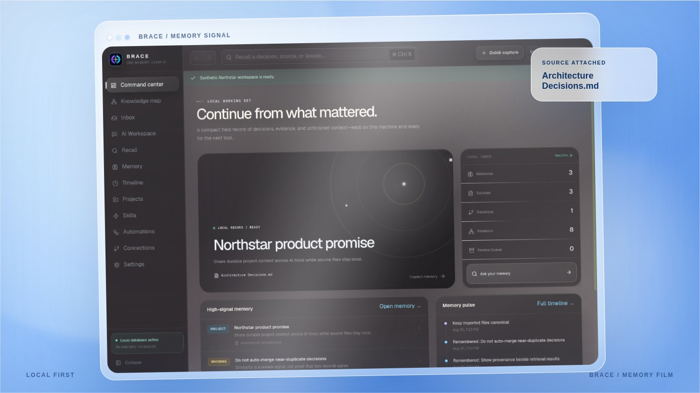
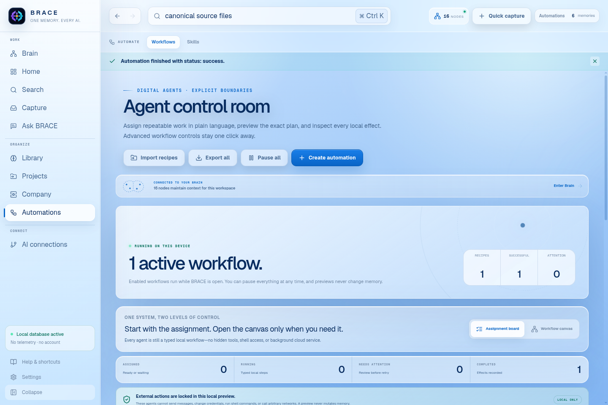

WINDOWS 10 / 11
THIS DEVICEBRACE for Windows
A familiar installer with Start menu shortcuts and a clean uninstall path.
Download installerx64 .exe Windows install guide
LOCAL-FIRST AI MEMORY
Keep project context, decisions, and source evidence ready across compatible AI tools.
THE SOURCE STAYS ATTACHED
Your files stay where you put them. BRACE builds a local memory beside them.
YOUR CONTEXT, UNDER YOUR CONTROL
BRACE indexes selected sources in place, stores runtime state in your application-data directory, and keeps network access explicit.
Read the privacy modelPRODUCT REEL
Every frame comes from the packaged Electron app using only the synthetic Northstar profile.




BRACE 0.5.0
Windows and Linux are equal first-class releases. Both start with an empty private database.
A familiar installer with Start menu shortcuts and a clean uninstall path.
Download installerx64 .exe Windows install guideChoose a portable AppImage or the native Debian and Ubuntu package.
Linux install guide